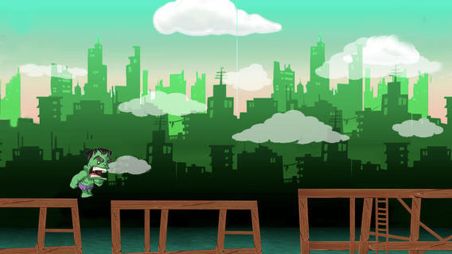
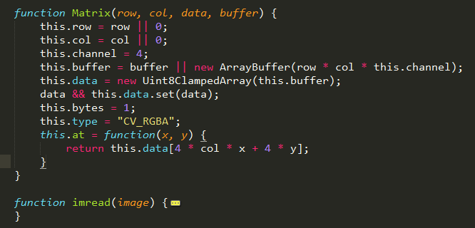

<div id="home">
	<strong>Introduction：</strong><br>
	The projects here are toy cases with javascripts.<br>
	Just a hobby, or a process of making senses of js.<br>
	<br>

	<ul class="posts">
		<li class="wrap_proj">
			<a href="./projects/bird/index.html">Flappy Bird
			<div id="preview"></div></a>
		</li>
		<li class="wrap_proj">
			<a href="./projects/green/index.html">Green Run<span>(Game's like 天天酷跑)</span>
			<div id="preview"></div></a>
		</li>
		<li class="wrap_proj">
			<a href="./projects/dip/index.html">Dip Project<span>(Dip tools set)</span>
			<div id="preview"s></div></a>
		</li>
	</ul>
</div>
